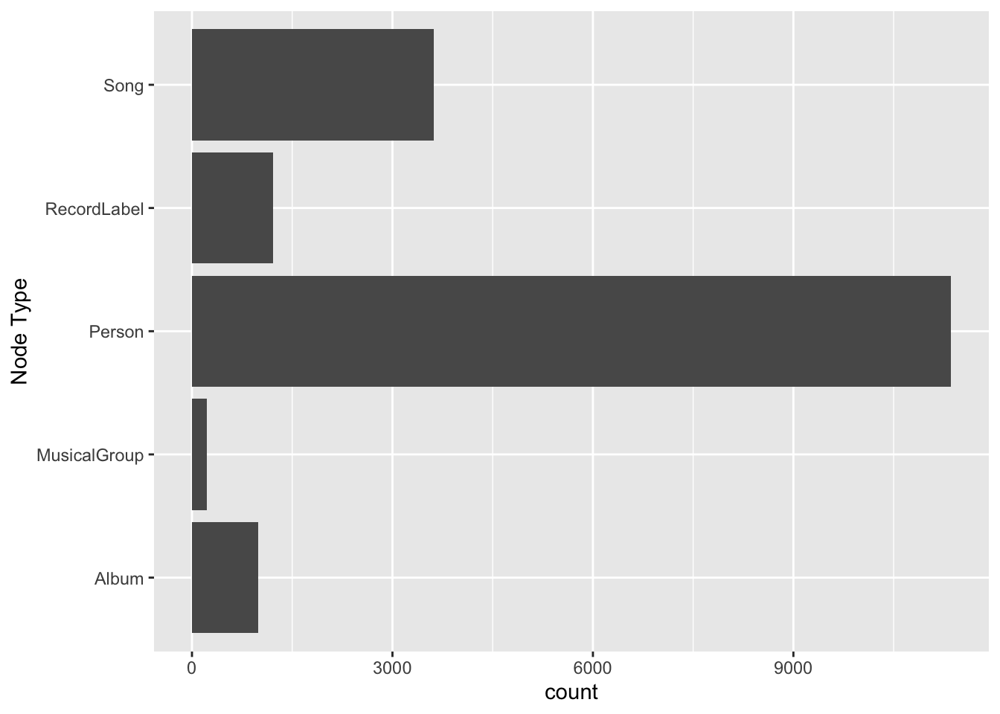
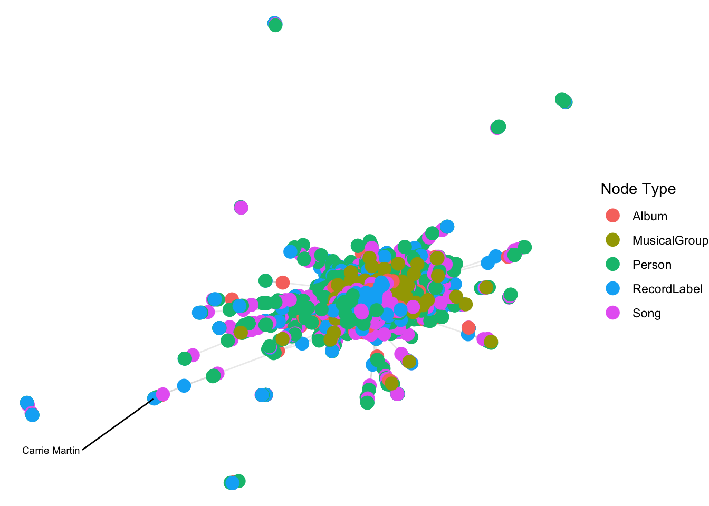

pacman::p_load(tidyverse, jsonlite, SmartEDA, tidygraph, ggraph)Preparation for VAST 2025 Mini Challenge 1
1 Loading Packages
2 Importing Knowledge Graph Data
kg <- fromJSON("../data/MC1_graph.json")2.1 Inspect Structure
str(kg,max.level=1)List of 5
$ directed : logi TRUE
$ multigraph: logi TRUE
$ graph :List of 2
$ nodes :'data.frame': 17412 obs. of 10 variables:
$ links :'data.frame': 37857 obs. of 4 variables:2.2 Extract and Inspect
nodes_tbl <- as_tibble(kg$nodes)
edges_tbl <- as_tibble(kg$links)2.3 Initial EDA
ggplot(data = edges_tbl,
aes(y = `Edge Type`)) +
geom_bar()ggplot(data = nodes_tbl,
aes(y = `Node Type`)) +
geom_bar()
3 Creating Knowledge Graph
3.1 Step 1 : Mapping from Node ID to Row Index
id_map <- tibble(id = nodes_tbl$id,
index = seq_len(
nrow(nodes_tbl)
)
)This ensures each id from your node list is mapped to the correct row number
3.2 Step 2 : Map Source and Target IDs to row indicises
edges_tbl <- edges_tbl %>%
left_join(id_map, by = c("source" = "id"))%>%
rename(from = index) %>%
left_join(id_map, by = c("target" = "id"))%>%
rename(to = index)3.3 Step 3 : Filter out any unmatched (invalid) edges
edges_tbl<- edges_tbl %>%
filter(!is.na(from), !is.na(to))3.4 Step 4 : Creating the Graph
graph <- tbl_graph(nodes = nodes_tbl,
edges = edges_tbl,
directed = kg$directed)3.5 Visualising the knowledge graph
set.seed(1234)3.6 Visualising the Whole Graph
ggraph(graph,layout = "fr")+
geom_edge_link(alpha = 0.3,
colour = "gray") +
geom_node_point(aes(color = `Node Type`),
size = 4) +
geom_node_text(aes(label = name),
repel = TRUE,
size = 2.5) +
theme_void()
4 Visualising The Sub Graph
4.1 Step 1 : Filter Edges to only “MemberOf”
graph_memberof <- graph %>%
activate(edges) %>%
filter(`Edge Type` == "MemberOf")4.2 Step 2 : Extract only connected nodes (i.e., used in these edges)
used_node_indices <- graph_memberof %>%
activate(edges) %>%
as_tibble() %>%
select(from, to) %>%
unlist() %>%
unique()4.3 Step 3 : Keep only those nodes
graph_memberof <- graph_memberof %>%
activate(nodes) %>%
mutate(row_id = row_number()) %>%
filter(row_id %in% used_node_indices) %>%
select(-row_id)4.4 Plot the sub-graph
ggraph(graph_memberof,
layout = "fr") +
geom_edge_link(alpha = 0.5,
color = "gray")+
geom_node_point(aes(color = `Node Type`),
size = 1) +
geom_node_text(aes(label = name),
repel = TRUE,
size = 2.5) +
theme_void()